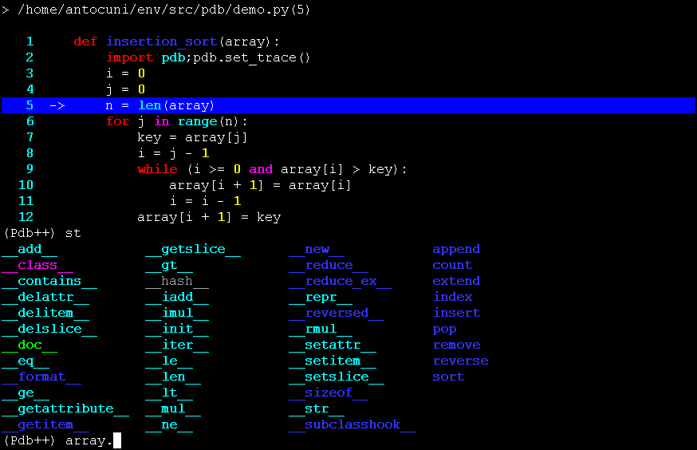

What
How
Why
loader = unittest.TestLoader()
suite = loader.loadTestsFromTestCase(TestSequenceFunctions)
unittest.TextTestRunner(verbosity=2).run(suite)
py.testtrialnosetestspython -m unittest discover
test foo.bar.TestCase.test_method
class CalculatorTest(unittest.TestCase):
def setUp(self):
self.calc = Calculator()
def test_add(self):
result = self.calc.add(5, 3)
self.assertEqual(result, 8)
def test_subtract(self):
result = self.calc.subtract(10, 4)
self.assertEqual(result, 6)
def multiply_test(self):
result = self.calc.multiply(9, 2)
self.assertEqual(result, 18)
def test_divide(self):
result = self.calc.divide(6, 3)
self.assertEqual(result, 2)
with self.assertRaises(ZeroDivisionError):
self.calc.divide(10, 0)
self.calc.divide(0, 0)
import mock
import foundausefortwitter as fauft
def test_twitter(self):
with mock.patch("fauft.urlopen", return_value=my_html) as m:
messages = self.twitter_scraper.fetch(user="@NYCPython")
self.assertTrue(m.called)
self.assertEqual(messages, ["Hello", "World"])
pdbpdb++pudb
Your Editor HereQuestions